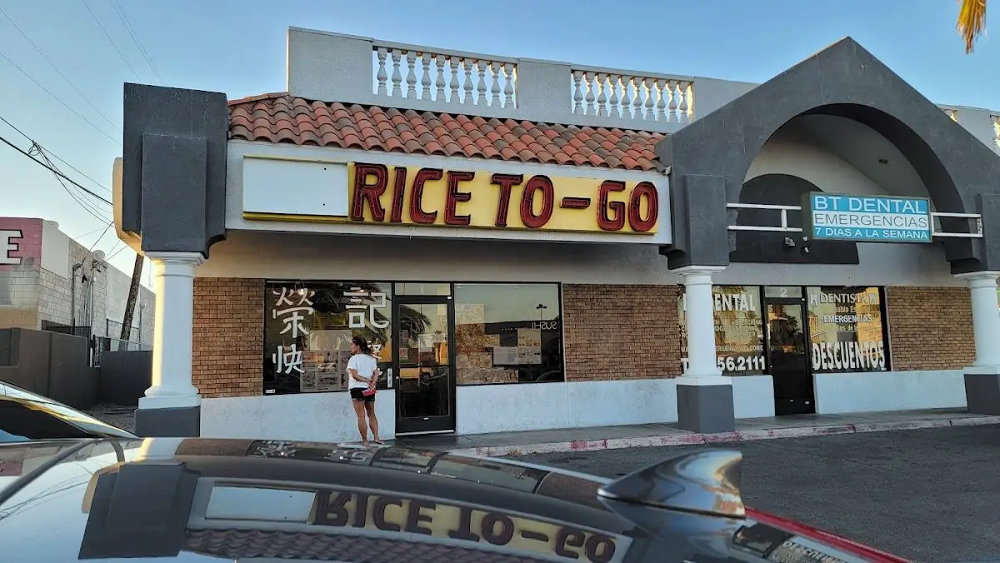

Rice to Go is a Chinese restaurant in Las Vegas. They offer casual dining with takeout service.
Rice to Go is located at 4840 W Spring Mountain Rd Unit 1, Las Vegas, NV 89102, Las Vegas, NV.
Yes, Rice to Go is a restaurants & food featured on My Aloha Map, a directory of Hawaiian, Pacific-Islander and Asian-American-owned businesses.
You can call (702) 870-6888.
Monday: 10 AM to 8 PM; Tuesday: Closed; Wednesday: 10 AM to 8 PM; Thursday: 10 AM to 8 PM; Friday: 10 AM to 8 PM; Saturday: 10 AM to 8 PM; Sunday: 10 AM to 8 PM.
We verify every business on My Aloha Map, and this one isn't verified yet. If you own it and something's wrong, you'd like to be removed, or you'd like to get verified, contact us here.